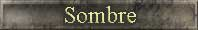
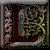
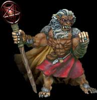
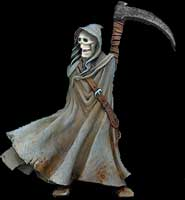
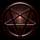

|
 |
 |

| |
|
|


es dieux étant occupés à parcourir le monde, une créature immonde en profita et sorti de son antre. Le pustuleux Mop, n'avait qu'une idée en tête, il voulait mettre la main sur une des pierres magiques appartenant aux nains. Mop, bien que pas trop malin, arriva à entrer dans la grande cité sous les montagnes des nains. Il réussit à se faufiler à travers les couloirs et à s'approcher de la salle des pierres magiques. Il passa plusieurs jours à attendre le bon moment. A un moment ou il n'y eut personne, il entra dans la salle et pris une des pierres. Sa sorti des cavernes fut presque aussi longue que son entré.Mop ne savait pas très bien à quoi servait cette pierre, il l'avait choisi uniquement car elle était très brillante. Cette pierre renfermait une grande puissance car elle avait déjà appartenu au démon Brec Kherr. Ce démon a été banni par les dieux et est présentement enchaîné au centre de la terre.
Mop s'aperçu que quand la pierre était secoué, elle brillait encore plus. Cette pierre absorbait la lumière. Il la secoua de plus en plus et tout a coup toutes les lumières en ce monde s'éteignirent. Mop causa une panique extrême aux habitants du monde. Mop avait provoqué l'apparition soudaine de l'ère sombre.Voyant que la lumière avait disparu les dieux Hai et Yah cherchèrent la cause. Hai trouva en premier le coupable. Avec une force incroyable, il réduit en miette Mop. Il ramassa la pierre et alla consulter son frère afin d'inverser le processus. Yah l’analysa. Il la déposa sur le sol, lança quelques incantations et de nombreux éclair de lumière jaillirent de ses mains. Il les lança contre la pierre qui se fendit en deux morceaux. La lumière envahi le ciel et le jour devint clair comme avant. Le monde fut sauvé… du moins c’est ce que tout le monde pensa.
Les pierres que les dieux ont laissées au sol les pensants détruites, ont été ramassées. Burok que tous croyaient mort prit les pierres et les emmena dans sa grotte. Ces pierres

allaient être les pièces maîtresses de son instrument de vengeance contre les dieux. Bien que dépourvu de magie, il avait gardé le savoir et les connaissances du passé. Il avait réussi à amasser au fils des ans assez de pierre magique afin de créer un portail. Ce portail allait servi de porte d’entrée à un puissant démon. Math’Barr était un démon sombre et ténébreux. Il avait réussi à convaincre Burok de la faire entrer dans son monde afin d’assouvir sa vengeance. Il avait réussi à sauver Carcassos lors de sa défaite. La seule chose qui ne pouvait pas était d’entrer dans ce monde. Mais Burok lui fit ce cadeau.Burok termina le portail et le mit en marche. Des vibrations se firent sentirent aux quatre coins du monde. On vit apparaître le nécromancien Carcassos et ensuite un vent glacial empli l’air, des nuages sombres apparurent et plus un seul son ne se fit entendre. Math’Barr venait d’entrer dans ce monde. La mort elle-même n’aurait pas été pire.
Le démon ne tarda pas, il chargea ses émissaires d’aller assembler une grande armée. Afin de convaincre les orcs à le suivre Math’Barr leur enseigna son art de la magie. Une

magie noire et mortelle. Il offrit cette forme de magie à toutes les races qui étaient prête à la suivre. Les gargouilles allèrent rejoindre les forces du mal. Math’Barr réussi à convaincre les Elfes noirs de se joindre à lui en disant que les dieux avaient toujours favorisé les elfes nobles à leur dépend et que les choses devaient changer. Le démon réussi même à convaincre plusieurs tribus de cyclope. Carcassos, pour sa part, alla de nuit dans le champs de bataille ou il avait connu la défaite. Il réussit à faire revenir à la vie une bonne partie de son armée. Son geste ne passa pas inaperçu car du haut de sa tour le sage Enric vit ce qui se passa. Aussitôt des messagers partirent quérir de l’aide.La dernière bataille que les humains avaient subie avait été une attaque surprise, mais cette fois ci les renforts arrivaient de partout. Le combat qui se préparait allait être d’une violence extrême. Les humains ne voulant plus subir d’assaut semblable ont élaboré de nouvelles techniques de combat. Avec l’aide des centaures qui ont habité la cité durant la période de reconstruction, ils ont réussi à développer une cavalerie hors du commun. De nombreux groupes d’attaquant arrivaient de partout. Les champions elfes nobles arrivaient avec des apprentis prêts et motivés au combat. Les nains, habitants non loin, s’ajoutaient au rand des combattants et ensuite arrivait par petit groupe des représentants de la race de cyclope (groupes fidèle à Hai) et des amazones. Un messager annonça que les génies étaient en route et qu’ils étaient accompagnés de Yah lui-même. Le moral de la population était à son meilleur. Avec l’aide d’un dieu, personne n’avait peur de perdre ce combat.
Pendant ce temps les forces de Math’Barr grossissaient beaucoup. Le démon avait réussi à faire d’un groupe de vampire, des combattants sans peur et d’une cruauté inégalée. Les vampires avaient absorbé de l’énergie venant du mal lui-même. Leurs yeux commença à s’engorger de sang et leur soif de combat devaient impossible à assouvir. Pour ce combat, les troupes n’avaient plus de crainte car maintenant ils avaient leur arme contre les dieux, ils avaient Math’Barr le démon. D’autan plus que la venue en ce monde de ce démon était inconnue des dieux ou de leur alliés. L’élément de surprise allait jouer en leur faveur.
L’heure de l’affrontement est proche, les troupes sombres ont débuté leur marche vers la cité humaine. Jamais on avait vu autant de gens prêts au combat. Même l’armée que Burok avait jadis formée pour régner sur le monde semblait petite comparé aux forces en présence en ce moment. Math’Barr resta en retrait, il ne voulait pas encore annoncer sa présence. Les troupes de Carcassos ont été les premiers à arriver en vu de la cité. Le spectacle qui suivi aurait fait rebrousser chemin à n’importe lequel armée. Yah s’éleva de toute sa splendeur et une immense muraille de granite s’élevèrent d’un bout à l’autre du champ de bataille. Un nombre incalculable d’archer de toutes races avancèrent à la muraille et se mirent en position. Un groupe de génie qui les suivaient, s’occupaient de transformer leurs armes en arc d’ébène. L’armée noire se prépara à l’attaque. Les pièces de l'échiquier étaient maintenant en place, et le signal de départ n’allait pas tarder à se faire entendre.
Le signal prit une forme inattendue. Une brume noire descendait sur toutes les troupes de l’alliance, y compris Yah. Une aura noire enveloppait maintenant tout le monde. Bien que cette aura ne semble rien faire de mal, les mages se sont aperçus rapidement qu’ils ne pouvaient plus lancer de sort sur leurs alliés. Le sol commença à vibrer. Un souffle froid passa. Une forme noire et immense sortie de derrière la colline. Math’Barr s’avança suivi de Burok et Carcassos. Il jeta un regard empli de haine à l’endroit de Yah et il dit : " Prépare-toi à vivre la fin de ton règne, car ton pire cauchemar est arrivé et rien ne va pouvoir m'arrêter". Yah, bien que surpris de l'apparition du démon rétorqua: "Bien des gens de ta race ont essayé de me vaincre et tous ont connu la perte, prépare-toi à subir le même sort qu'eux".
Burok lança l'attaque. L'armée noire avançait rapidement. Enric commanda aux archers et une pluie de flèche tomba. Peu de victime tombait, car la première vague à se porté à l'attaque était composé de mort vivant tout à fait insensible aux flèches. Les armes de siège commençaient à affaiblir le mur, la première défense allait bientôt céder et aucun mage ne pouvait rien faire. Les troupes de l'alliance s'avançaient près du mur, les archers re repliaient. Tout à coup le ciel devint noir. Au loin cela semblait être des oiseaux, mais bientôt on reconnu des milliers de gargouilles qui volaient en direction du mur. En quelques secondes, elles étaient passé le mur et attaquaient les troupes au sol. Le mur céda et bientôt l'armée de mort traversa. Avec les arches qui repliaient vers la cité, les orcs, cyclopes et elfes noires se joignirent à l'attaque. Le combat était acharné, la cavalerie lourde des humains sortis de la cité et partout où ils passaient, ils faisaient des ravages. Burok envoya à l'attaque une vague de créature carnivore qu'il avait créée magiquement. Ces créatures étaient particulièrement destructrices pour les unités montées. Les humains et amazones subissaient de grande perte.
Trouvant que le combat durait trop longtemps à son goût, Math'Barr s'avança pour participer. Son seul regard faisait fuir les combattants. Des images de cauchemar emplissaient leurs têtes. Voyant cela Yah lança une charge électrique sur Math'Barr qui le propulsa plusieurs mètres en arrière. Plus en colère que jamais, le démon lança une série de boule de feu gigantesque sur le dieu. Celui ci encaissa sans problème la première, la deuxième, troisième. Il oscilla sur la quatrième, mais nul en ce monde est de taille à rivaliser en magie contre Yah et Math'Barr s'en aperçu. Yah d'un air vainqueur dit: "Beaucoup, te reste t'il à apprendre, soumet toi ou tu périras". La réplique du démon fut cinglante, si Yah ne pouvait tomber par magie, il tomberait par les armes. Math'Barr fonça sur le dieu. Le corps à corps était moins du ressort de Yah.
Le vent glacial qui rodait fit rapidement place à un vent chaud venu du sud. Un nouvel espoir arriva, le dieu Hai arrivait à vive allure. Il était accompagné d'un très grand nombre d'archange ainsi que plusieurs autres combattants des différentes races venues porter leur appui. Voyant cela Math'Barr frappa de son arme Yah qui bascula contre la montagne et se tourna afin d'affronter Hai. Le sol tremblait sous la force du combat. Math'Barr était puissant mais il s'aperçut que la force au combat de Hai était supérieure à la sienne. Seul espoir, utiliser la magie. Les boules de feu, inefficace contre Yah, avaient réussi à ébranler Hai. Mais ce fut de courte durée car Yah se dressa sur la montagne, un énorme trou noir se formait au-dessus de sa tête. Toute magie lancée était absorbée par ce trou. Bientôt les génies avaient retrouve la possibilité de faire de la magie. Les sorts de Math'Barr avaient disparu.
Les pierres venues de partout écrasaient les troupes noires. Carcassos tomba au combat, il avait subi les foudres de Enric. Tous les combattants de l'alliance avaient le feu au cœur, et les dommages qu'ils faisaient subir à l'ennemi étaient de plus en plus considérable. Les elfes noirs ont été les premiers à reculer, ils avaient perdu confiance et ils s'enfuyaient avant qu'il ne soit trop tard. Bientôt se fut au tour des gargouilles et des cyclopes de fuir. Math'Barr était devenu fou de rage. Il se rua à toute vitesse sur Yah. A peine il eut le temps de lever son arme contre le dieu qu'il sentit soudain la lame de Hai lui trancher la main. Sa main tenant toujours son arme tomba sur le sol. Le démon ne pouvait pas vaincre les deux dieux ainsi réunis. En un geste éclair, un nuage noir est venu l'entourer et en se dissipant Math'Barr avait disparu. Burok sonna la retraite et disparu sans que personne ne puisse le rattraper. Les dernières gargouilles restantes ramassèrent le crane et les quelques morceaux restant du squelette de Carcassos avant de prendre la fuite.
Le combat avait pris fin et l'ampleur des dégâts était énorme. Maintenant les dieux avaient rencontré une menace qui leurs était inconnu jusqu'à maintenant. Math'Barr reviendra. Il a de puissants alliés et sa haine envers les dieux ne cessera de s'amplifier. Il faut s'attendre au pire et s'y préparer car la revanche risque d'être cinglante.
Math'Barr n'a qu'a bien se tenir car Hai et Yah partent à la chasse au démon…
